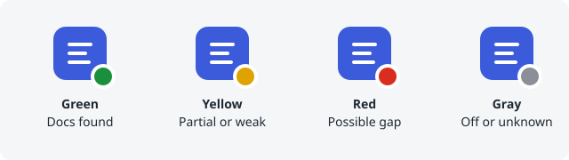

Status icon

The extension can show the result of a ticket on its toolbar icon, so you see it without opening the popup. Turn on Show status on the toolbar icon in the popup and allow access to Zendesk when the browser asks.
What the colours mean#
- Green (badge OK): relevant documentation was found and no potential gap.
- Yellow (badge !): documentation was found but there are potential gaps, or the matches are weak.
- Red (badge GAP): no relevant documentation and at least one potential gap.
- Gray: off, not a ticket page, still scanning, no clear question found, a billing, account or cancellation request, a feature request, or the ticket could not be read.
Hover over the icon to read the same result as text. A colour is a lead to review, not proof of a gap.
Privacy#
- The scan runs in your browser on the ticket you have open. Ticket text is not stored and is not sent anywhere.
- Turn the switch off at any time to clear every icon and badge. Extension on must also be on.
Still stuck? Check the glossary and FAQ, or ask on GitHub.